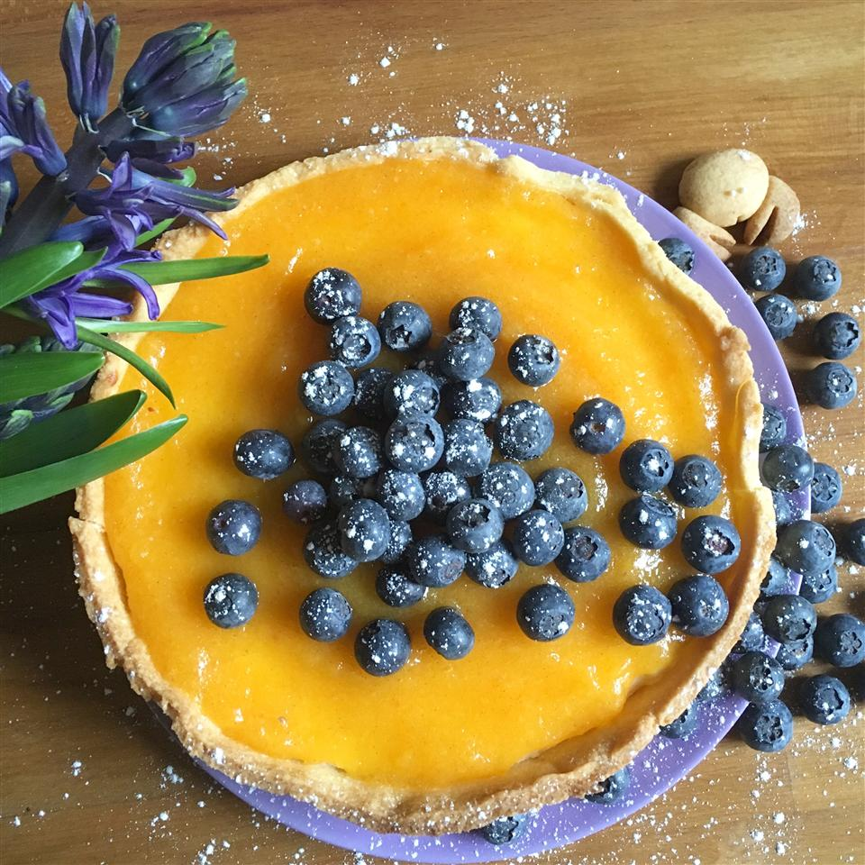

Cheesecake with Blueberries

There are not that many desserts with persimmons. However, they are very healthy and make your desserts delicious and naturally sweet without adding sugar. They will also make the texture of your cheesecakes more sophisticated. The cake is good on the same day or on the next day. If you want to eat it on the next day, keep it in the fridge uncovered. Your cookie pastry is still very soft and fresh. If you cover it, it will become soggy.
- 1 cup all-purpose flour
- ½ cup confectioners' sugar
- 5 tablespoons butter
- 1 egg yolk
- 4 ripe persimmons, pureed, divided
- ¾ cup ricotta cheese
- 5 tablespoons mascarpone cheese
- 2 tablespoons honey
- 1 (10.5 ounce) package fresh blueberries
- Preheat oven to 300 degrees F (150 degrees C).
- Combine flour, confectioners' sugar, butter, and egg yolk together in a bowl. Mix until dough is well combined.
- Place dough onto a round piece of parchment paper. Roll dough out onto your work surface, rotating the parchment clockwise after each roll, until dough is about 1/10-inch thick. Slide dough and parchment paper into a tart pan and align the edges.
- Bake on the lowest rack in the preheated oven until golden brown, about 20 minutes. Remove from oven. Keep oven on.
- Whisk 2 pureed persimmons together with ricotta cheese, mascarpone cheese, and honey in a bowl. Spread mixture over the baked dough, leaving 1/4- to 1/2-inch space on the edges.
- Place dough back in the oven and bake until a toothpick inserted into the cheesecake comes out clean, 10 to 15 minutes. Remove and let cool in the pan until firm, at least 15 minutes.
- Place dough back in the oven and bake until a toothpick inserted into the cheesecake comes out clean, 10 to 15 minutes. Remove and let cool in the pan until firm, at least 15 minutes.